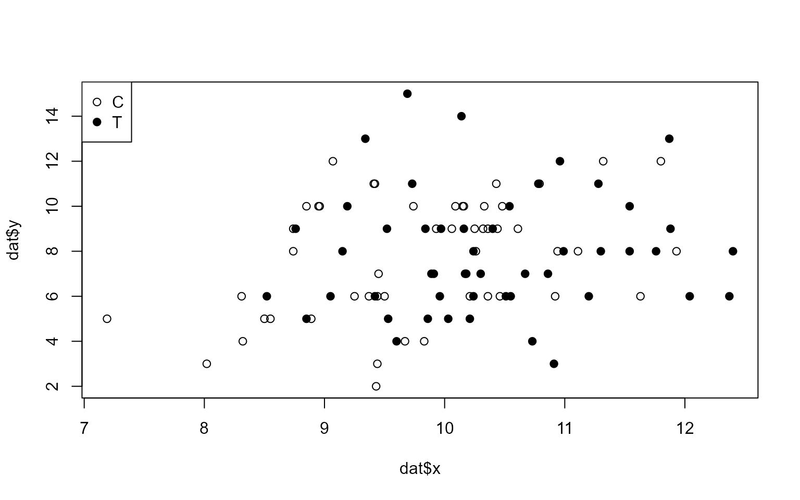
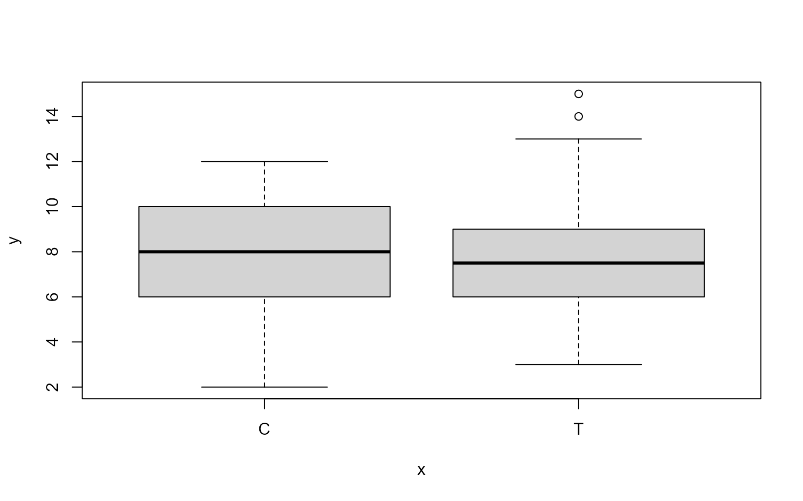
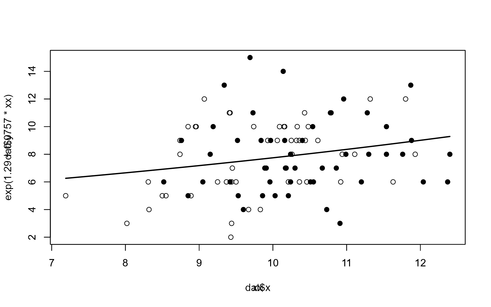

3. 一般化線形モデルーポアソン回帰
- 説明変数を組み込んだモデル
- 個体ごとに異なる説明変数を組み込む
- ポアソン回帰
3.1 例題：個体ごとに平均種子数が異なる場合
- 架空の植物100個
- 個体\(_i\)
- 種子数\(y_i\)
- 体サイズ\(x_i\): 正の実数
- 施肥処理\(f_i\): C処理なし, T処理あり; 50体ずつ
- 体サイズと施肥処理は独立
3.2 観測されたデータの概要を調べる
- R でデータ読み込み、処理
dat<-read.csv('kubobook_2012-2/poisson/data3a.csv')
summary(dat)## y x f
## Min. : 2.00 Min. : 7.190 Length:100
## 1st Qu.: 6.00 1st Qu.: 9.428 Class :character
## Median : 8.00 Median :10.155 Mode :character
## Mean : 7.83 Mean :10.089
## 3rd Qu.:10.00 3rd Qu.:10.685
## Max. :15.00 Max. :12.4003.3 統計モデリングの前にデータを図示する
- データをよく見ておくこと大事
plot(dat$x, dat$y, pch=c(21,19)[as.factor(dat$f)])
legend('topleft', legend=c("C","T"), pch=c(21,19))
plot(as.factor(dat$f),dat$y)
3.4 ポアソン回帰の統計モデル
- カウントデータなのでポアソン分布でばらつきを表現できるはず
- 平均種子数\(\lambda_i\)が体サイズxや施肥処理fに影響される
- まずは体サイズ\(x_i\)だけに影響されるというモデル
- \(p(y_i|\lambda_i)=\frac{\lambda_i^{y_i}exp(-\lambda_i)}{y_i!}\)
3.4.1 線形予測子と対数リンク関数
- ここでは平均\(\lambda_i\)は説明変数\(x_i\)の関数であるとしている。そこで、
- \(\lambda_i=exp(\beta_1+\beta_2x_i)\)
- 図示してみると、パラメータ(\(\beta_1, \beta_2\))によって体サイズと平均種子数の関係が大きく変化することが分かる
- ここでは、右辺がexp()である理由は説明されていないことに注意
- 線形予測子(linear predictor)とリンク関数(link function)
- さっきの式は、下のように変形可能（両辺にlog）
- \(log\lambda_i=\beta_1+\beta_2x_i\)
- 右辺が項の線形和となったので、これを線形予測子と呼ぶ
- このとき、左辺が\(\lambda\)の関数となり、右辺が線形予測子。このときの左辺の関数をリンク関数と呼ぶ。今の場合は対数リンク関数。
- ポアソン回帰の場合は、対数リンク関数を使うのが普通。
- 正準リンク関数
- ポアソン回帰には対数リンク関数
- ロジスティック回帰にはリジットリンク関数
- これらを正準リンク関数と呼ぶ
- 計算に都合が良い＝ポアソン回帰の場合、パラメータが負になり得ない
- 分かりやすい＝効果が項同士の積で表される(expだから)→3.6で説明
- さっきの式は、下のように変形可能（両辺にlog）
3.4.2 あてはめとあてはまりの良さ
- ポアソン回帰＝データに対するポアソン分布を使った統計モデルの「あてはめ」
- いろいろなあてはめの可能性がある中で、対数尤度logLが最大になるパラメータを決める
- あるデータYのもとでの対数尤度は
- \(logL(\beta_1,\beta_2)=\Sigma_ilog\frac{\lambda^{y_i}exp(-\lambda_i)}{y_i!}\)
- ここで、\(\lambda_i\)はパラメータ\(\beta_1と\beta_2\)の関数
- 2章ではパラメータが1つだったので対数尤度の最大値は簡単に求められたけど、2つだとそうはいかない。
- そこで「数値を使った試行錯誤」＝MCMC
- ただし、いきなりMCMCというわけではなく、RではGLMについてはglm関数で最尤推定ができる。以下、ここで使ってるデータの例。
fit<-glm(y~x, data=dat, family=poisson)
print(fit)##
## Call: glm(formula = y ~ x, family = poisson, data = dat)
##
## Coefficients:
## (Intercept) x
## 1.29172 0.07566
##
## Degrees of Freedom: 99 Total (i.e. Null); 98 Residual
## Null Deviance: 89.51
## Residual Deviance: 84.99 AIC: 474.8summary(fit)##
## Call:
## glm(formula = y ~ x, family = poisson, data = dat)
##
## Deviance Residuals:
## Min 1Q Median 3Q Max
## -2.3679 -0.7348 -0.1775 0.6987 2.3760
##
## Coefficients:
## Estimate Std. Error z value Pr(>|z|)
## (Intercept) 1.29172 0.36369 3.552 0.000383 ***
## x 0.07566 0.03560 2.125 0.033580 *
## ---
## Signif. codes: 0 '***' 0.001 '**' 0.01 '*' 0.05 '.' 0.1 ' ' 1
##
## (Dispersion parameter for poisson family taken to be 1)
##
## Null deviance: 89.507 on 99 degrees of freedom
## Residual deviance: 84.993 on 98 degrees of freedom
## AIC: 474.77
##
## Number of Fisher Scoring iterations: 4logLik(fit)## 'log Lik.' -235.3863 (df=2)- 結果の読み方まとめ
- (Intercept)は\(\beta_1\)
- xは\(\beta_2\)
- Estimateは推定値
- Std. Error は標準誤差
- 推定値\(\beta_1と\beta_2\)のばらつき（標準偏差）
- パラメータ推定値のばらつきSEの推定方法
- パラメータ推定値のばらつきを正規分布と仮定、さらに対数尤度関数の形が正規分布に近いと仮定。それによってSEを求めている。
- z valueは統計量z。最尤推定値/SE（Wald統計量）。最尤推定値が0から離れているかどうかの目安となり得る。
- Pr(>|z|)は、平均z値（の絶対値）、標準偏差1の正規分布の無限大から0の面積の2倍。値が大きいと、z値（つまり推定値）が0に近いということになる。今の例でいうと\(\beta_1\)は0と十分に離れてるけど、\(\beta_2\)は結構近い。信頼区間くらいで考えた方が良さそう。
- ある説明変数をモデルに含めるべきかどうかは、第4章のモデル選択で判断すべき
- あてはまりの改善か、予測の改善か
- じゃああてはまりの完全にはWald信頼区間？そういうわけでもなさそうだけど。
- 最大対数尤度＝あてはまりの良さ（goodness of fit)
- logLik()関数
3.4.3 ポアソン回帰モデルによる予測
- ポアソン回帰の推定結果を使って、体サイズに対する種子数の予測ができる
plot(dat$x, dat$y, pch=c(21,19)[as.factor(dat$f)], ylim=c(min(dat$y), max(dat$y)))
xx<-seq(min(dat$x), max(dat$x), length=100)
par(new=T)
plot(xx, exp(1.29 + 0.0757 * xx), type='l', lwd=2, ylim=c(min(dat$y), max(dat$y)))